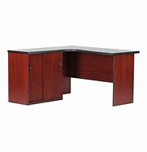

|
 |
 |
 |
MAKRO
Makro is an international brand of warehouse clubs, also called cash and carries. Ownership of the worldwide chain of stores is split between three companies: Metro AG in Europe, SHV Holdings in Latin America, and CP ALL in Asia. SHV opened the first Makro in Amsterdam in 1968. In the following years more stores opened in the Netherlands and several other European countries and, in 1971, South Africa.[1] In the 1970s and 1980s Makro extended its business to the Americas and Asia. Makro had also expanded to the United States in the mid-1980s. In 1989, Kmart bought the US locations,[2] and converted most of them to Pace Warehouse in 1990. The Asian stores were also eventually sold out to various firms with the latest ones sold to CP ALL of Thailand. In 1998, owner SHV Holdings sold the Makro stores in Europe to Metro AG.
In 1968, the first Makro store opened in Amsterdam. In April 1971 the first Makro in the UK opened in Eccles, Manchester. In 1971, the first Makro store outside Europe opened in South Africa (the South African stores were subsequently in 1990 exchanged for a shareholding in Massmart and in 2004 SHV sold its Massmart shares). In 1988, the first Makro store in Asia opened in Thailand.
Where will you find Makro?
You will find the Makro store all over the wolrd and including all provinces around South Africa,more than 1000 shops opened